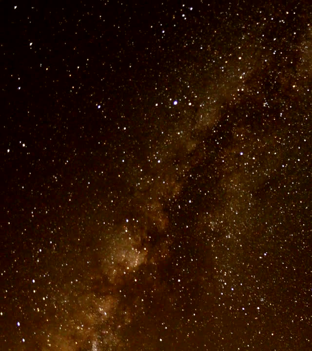

Astrología
Tu carta natal es un mapa simbólico que permite explorar tu personalidad, tus necesidades, tus potencialidades y las distintas maneras en que te relacionás con el mundo.
A través de la interpretación astrológica podemos descubrir aspectos de nuestra historia y comprender los ciclos que atravesamos.
Explorar consultas de astrología